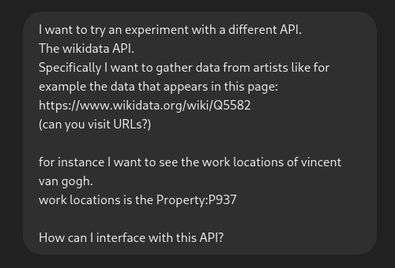
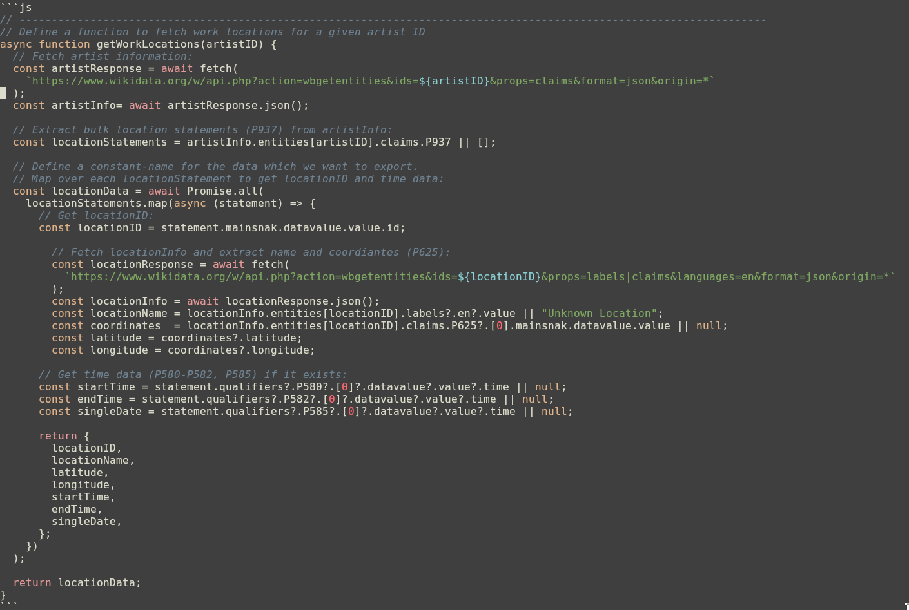
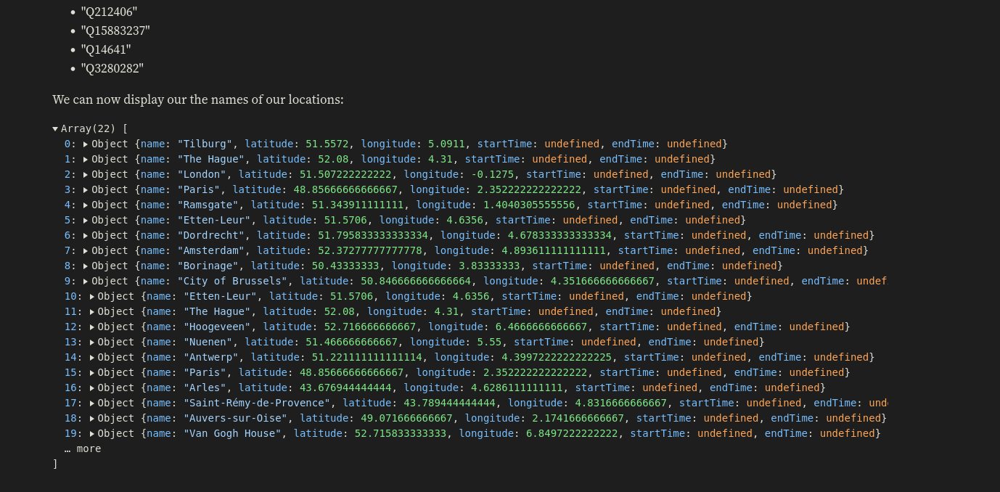
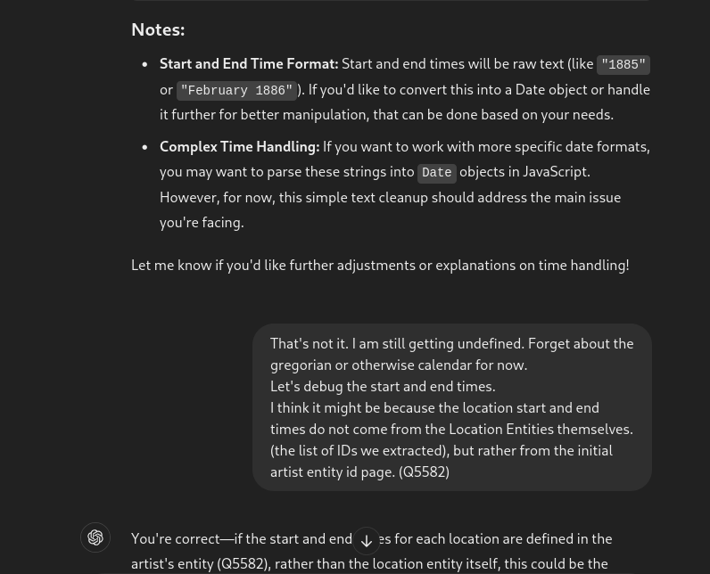
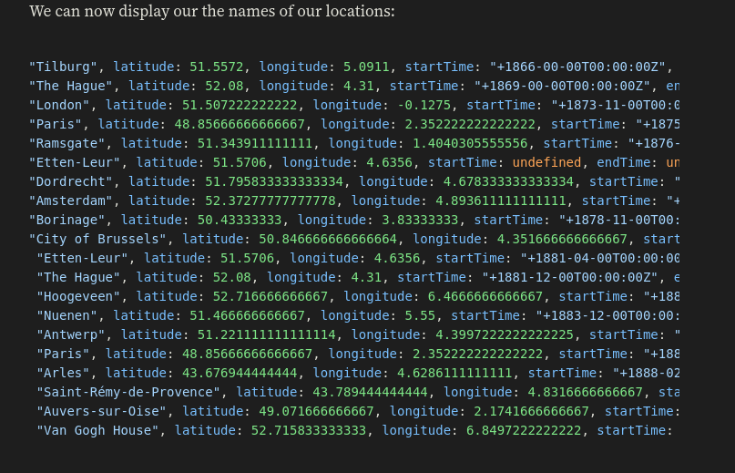
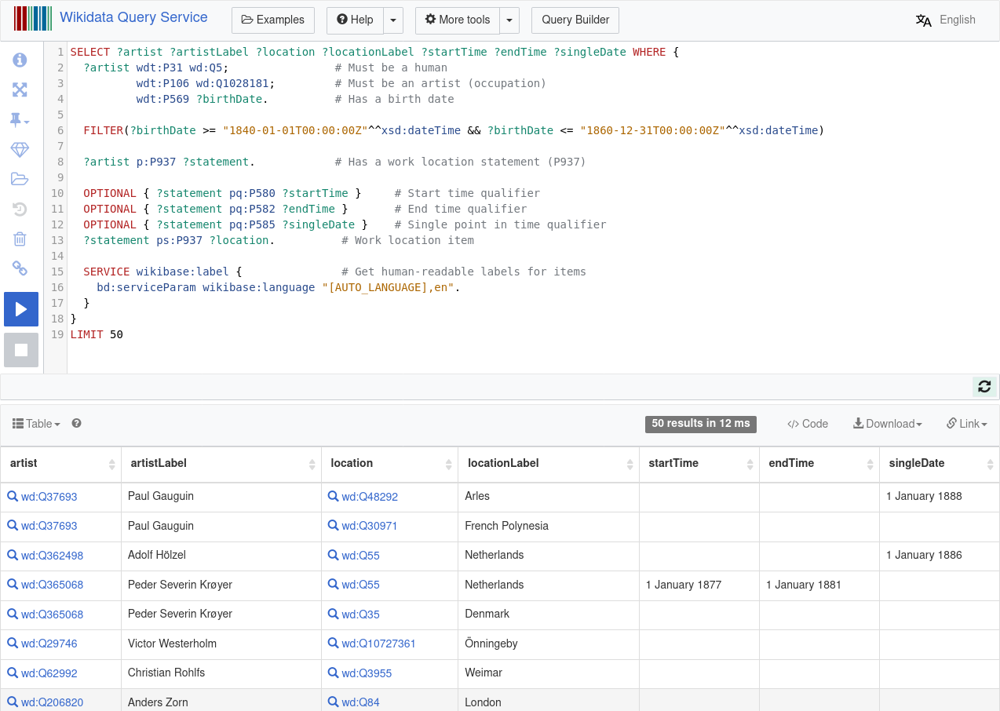

Wiki Data API
.jpg/220px-Vincent_van_Gogh_-_Self-Portrait_-_Google_Art_Project_(454045).jpg "Van Gogh")

The WikiData API
Let's have a look at what kind of information the WikiData page has on a particular artist: https://www.wikidata.org/wiki/Q5582
We can query the WikiData API for the information it has on Vincent Van Gogh. Van Gogh has an entity ID of Q5582.
curl 'https://www.wikidata.org/w/api.php?action=wbgetentities&ids=Q5582&props=claims&format=json' | jq
This gives us a bunch of different properties but to much to be useful to the naked eye without filtering.
(Especially cause each claim/property is a wikimedia entity in itself.)
The 'work location' property has an property ID of P937.
So we can filter this further with the jq command:
curl 'https://www.wikidata.org/w/api.php?action=wbgetentities&ids=Q5582&props=claims&format=json' | jq '.entities.Q5582.claims.P937[].mainsnak.datavalue.value.id'
which gives us:

Function Code:

We can now display the names of our locations:
And here is the whole data for Van Gogh, including location, date and coordinates. Van Gogh (Q5582):
Let's try some different artists.
Gauguin (Q37693):
Now let's setup our map
Making of
We initially had some problems with how the time data was fetched from the API:   
